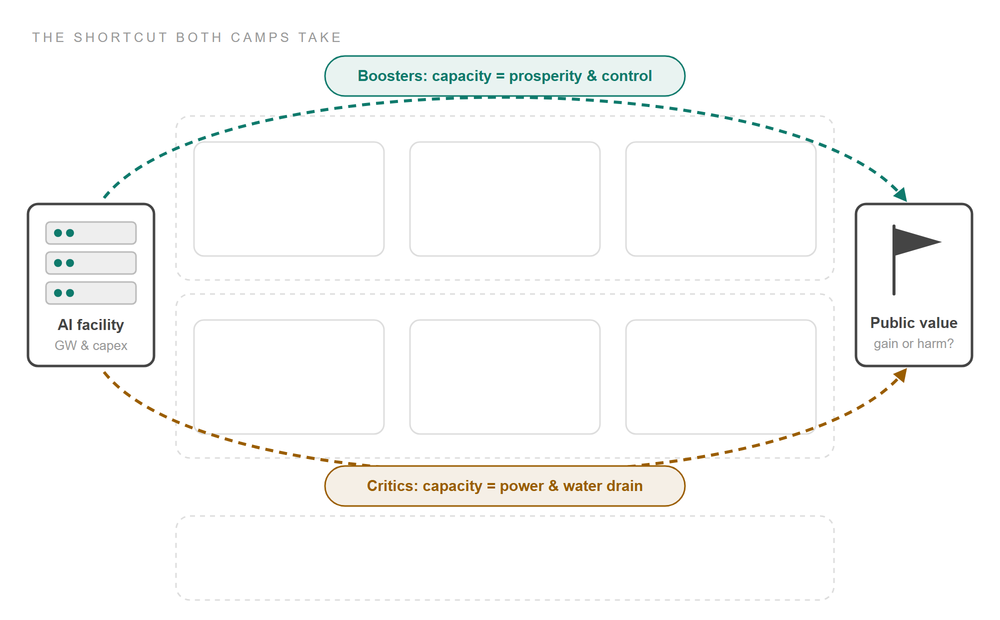
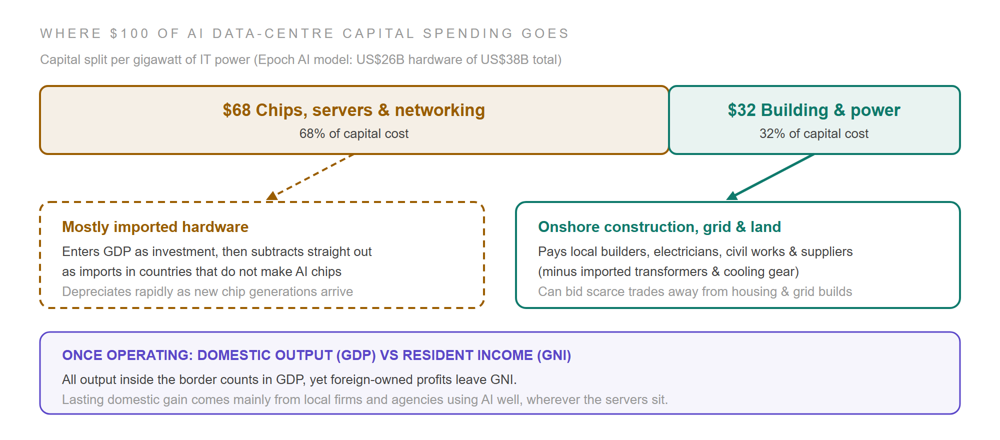
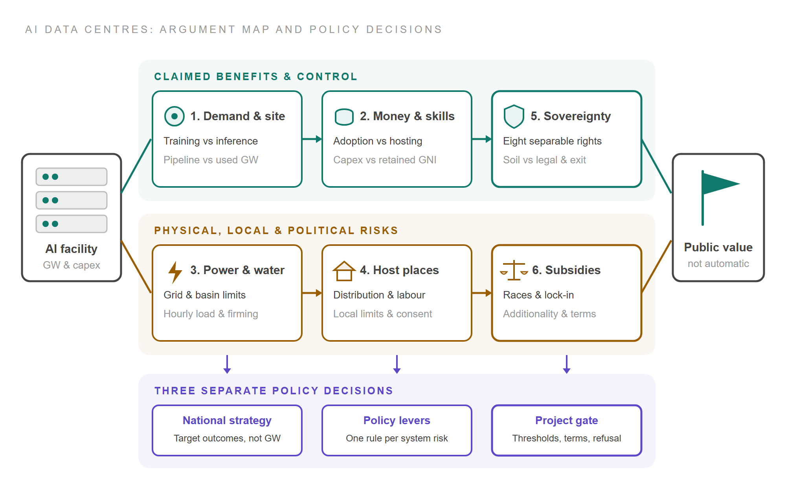

How to read the fight over AI data centres
When a developer proposes a multibillion-dollar AI data centre, two camps form immediately. Supporters see essential infrastructure that brings investment, raises productivity, and secures national sovereignty. Critics see a warehouse of imported chips that claims scarce electricity, water, and land while leaving few lasting jobs behind.
Smart people look at the same building and reach opposite verdicts because AI facility capacity and Public value sit at opposite ends of a long causal chain. Headline arguments skip the middle of that chain. One camp treats announced megawatts and capital spending as proof of national gain; the other treats resource draw as proof of net harm.

Before weighing competing studies, it helps to see the whole map of the debate. Six contested links sit between a server hall and a good public outcome:
- Demand and location: whether new facilities are needed onshore at all.
- Money and capability: how much spending and know-how remain in the host country.
- Power, water, and land: how round-the-clock loads interact with local grids and basins.
- Host communities: who receives the gains and who carries the local burdens.
- Sovereignty and leverage: which rights domestic concrete secures and which remain abroad.
- Subsidies and power: what happens when governments compete to attract mobile capital.
Each section below follows the same four steps: the case for, the case against, where the nuance sits, and how to weigh the evidence when numbers arrive. After mapping all six links onto one summary table, the post closes on the three policy decisions governments actually have to make.
1. Demand and location⚓︎
The first dispute is whether new facilities are needed at all, and whether domestic AI use requires domestic buildings.
The case for
Training frontier AI models and running them reliably for millions of users requires dense, specialised clusters that scattered office servers cannot provide. Even when software advances cut the computing needed for a single query, cheaper and better AI can expand usage fast enough to raise total demand.
Falling short of capacity carries real costs: higher prices, slower domestic adoption, and dependence on whichever firms and countries built ahead. Public research, health systems, defence, and emergency services may also need dedicated capacity they can rely on when commercial queues tighten.
The case against
Commercial demand differs from social need, and global demand differs from local siting. Anticipated market demand can reflect speculative land-banking, rival firms duplicating clusters, or low-value uses, while universities and civic projects remain priced out. Better model design, workload scheduling, and fuller use of existing halls can also absorb part of projected growth without pouring as much new concrete.
Above all, a country can import most AI services over undersea fibre cables, just as most countries import software or phones without hosting semiconductor fabs. Domestic appetite for AI tools does not by itself prove a need for domestic server halls.
Where the nuance sits
Two distinctions govern this link: the workload (the computing task inside the building) and the counterfactual (what realistically happens if this project is not built).
- Training builds or updates a model. Because training is rarely sensitive to millisecond delays, it can run wherever power and chips are cheapest, though the largest frontier runs prize single massive campuses.
- Inference uses a trained model to answer requests. Real-time voice, clinical tools, and industrial control need low response delay near users; overnight coding agents or batch analysis can run almost anywhere.
- Regulated workloads in health, finance, or government may stay onshore for legal rather than technical reasons.
Meanwhile, the realistic alternative to a greenfield campus is rarely doing nothing. It may be expanding an existing site, phasing construction, importing compute for mobile tasks, or putting public effort into helping local firms adopt AI rather than hosting servers.
How to weigh the evidence
- Separate pipeline from actual use. Keep four quantities apart: announced pipeline, contracted grid connections, installed IT power, and actual utilisation. In Australia, the electricity market operator counted 67 gigawatts of data-centre projects in its 2026 development pipeline, yet average grid-connection utilisation at operating sites sat near 27%, and 36% of developing projects from the prior year had been cancelled (AEMO, 2026). Pipeline totals measure developer option-taking, not verified need.
- Ask which tasks break offshore. Demand evidence on which specific domestic users cannot be served from existing halls or across borders.
Even when a workload genuinely belongs onshore, physical necessity settles only the first link. The next question is how much economic value stays behind.
2. Money and capability⚓︎
A facility with a ten-billion-dollar price tag sounds like a ten-billion-dollar boost to the host economy, which is why headline capital spending dominates political announcements.
The case for
- Construction and services: Building a campus creates work for civil contractors, electricians, cooling specialists, and engineers.
- Capital-intensive output: Operation generates corporate taxes, council rates, and steady demand for energy and maintenance. Judging a capital-intensive asset solely by headcount inside the fence would dismiss ports, wind farms, and telecom networks too.
- Economy-wide productivity: Accessible computing is an enabling input. Its largest economic payoff comes when businesses, hospitals, and agencies redesign everyday tasks to raise output per hour worked.
The case against
Follow where each dollar actually goes. In Epoch AI's cost model, roughly two-thirds of capital spending per gigawatt of IT power (US$26 billion of US$38 billion) buys specialised chips, servers, and networking gear. Outside a handful of hardware-making economies, almost all of that equipment is imported.

In national accounting, imported machines enter gross domestic product (GDP) as investment and subtract straight back out as imports. Domestic value added sits mainly in the building shell, power fit-out, and local services. Once running, foreign-owned halls count toward domestic GDP, yet profits sent to overseas owners drop out of gross national income (GNI), which measures what residents keep.
Construction booms carry opportunity costs as well. Giant campuses can bid scarce electricians, transformers, and builders away from housing and grid upgrades. And a turnkey hall filled with imported racks and run by offshore software can depreciate fast as chips age, leaving little lasting domestic technical capability.
Where the nuance sits
Keep three tests separate: whether AI helps adopters, whether data centres earn good private returns, and whether hosting creates net public value. Heavy upfront capital, competition, and rapid chip obsolescence can crush investor returns even while AI transforms work, or deliver private rents while shifting grid costs onto the public (Hempton, 2026).
Avoid double-counting as well. One local building cannot claim credit for all domestic AI productivity gains if local firms could have rented the same models from existing or overseas servers; only the facility's additional contribution counts.
How to weigh the evidence
- Gross capex versus domestic value added: Subtract direct and indirect hardware imports before quoting investment numbers.
- GDP versus resident income (GNI): Check ownership, tax concessions, and where operating profits land.
- Direct full-time jobs versus multiplier counts: Industry reports often bundle direct staff, supplier roles, and part-time work via input-output multipliers (for instance, Mandala's Australian industry report). National statisticians warn that multipliers overstate net job gains when skilled labour is already scarce.
- Upstream build versus enabled output: As Ireland's enterprise assessment shows, cumulative construction value added and annual output in wider digital sectors are different quantities that cannot simply be added together.
Tracing demand and money covers the commercial side of the ledger. Every server hall also plugs into local wires, pipes, and land.
3. Power, water, and land⚓︎
Commercial revenues move across borders by contract; electricity, water, and land claims hit a specific grid node and river basin at a specific hour.
The case for
Large, creditworthy operators can sign long-term power contracts that help finance new wind, solar, battery, and transmission builds. Placed behind grid bottlenecks, a campus can soak up renewable electricity that would otherwise be curtailed. If flexible workloads pause during evening peaks, steady off-peak demand can even spread fixed network costs across more megawatt-hours (Nelson, 2026).
On water and land, consolidating compute into modern halls beats running thousands of inefficient corporate server closets. Closed-loop or air cooling, recycled industrial water, and brownfield sites can keep local environmental footprints small.
The case against
Speed, timing, and concentration work the other way. Data centres can be built in two to three years; high-voltage transmission and power stations take much longer. When round-the-clock loads arrive ahead of clean supply, grids run coal or gas plants harder, raising marginal emissions (pollution from the extra generator turned on) even when average grid power looks clean.
Network upgrades triggered by new campuses can spill onto household power bills, while falling cost per query can spur a rebound that raises total energy use. In dry regions, evaporative cooling competes with towns, farms, and rivers during summer heatwaves. Looking only inside the site fence also misses upstream mineral mining and chip manufacturing, diesel backup generators, new transmission corridors, and electronic waste (UNCTAD, 2024).
Where the nuance sits
Physical engineering turns on hourly and local constraints that annual or global averages hide.
![Two panels. Left: Power, hourly and local. A 24-hour chart shows a flat 24/7 AI load line cutting across a midday solar and wind curve, leaving night-time shaping and firming gaps; bars below compare data centres' 1.5% share of world electricity in 2024 with 23% in Ireland in 2025. Right: Water, consumed and indirect. Two boxes separate water withdrawal (returned) from consumption (evaporated), and bars below compare 66 billion litres of US on-site cooling water with roughly 800 billion litres consumed indirectly at power plants.](../../../../blog_assets/ai_data_centres_power_water.png)
First, grids require three distinct services: bulk energy over the year, shaping (storage to move solar and wind across hours), and firming (backup supply through multi-day wind and solar lulls). Buying annual renewable certificates equal to yearly consumption does not supply local hourly shaping and firming.
Second, paying today's power tariff differs from paying for tomorrow's grid build. Virginia's legislative auditor found data centres covered their current cost of service under existing rates, yet projected that extra generation and transmission demand could still add US$14–37 a month in real dollars to a typical Dominion residential bill by 2040 (JLARC, 2024).
Third, cooling involves direct engineering trade-offs: dry cooling saves local water at the cost of higher electricity use. And blocking a project in a clean, wet region can shift rather than cut global harm if the workload moves to a coal-heavy, water-stressed grid instead.
How to weigh the evidence
- Scenario ranges, not single forecasts: Treat projections like the IEA's 2026 global central case (~950 terawatt-hours by 2030) or LBNL's 2025 US sensitivity bounds (521–843 terawatt-hours) as model scenarios, not meter readings.
- Local grid share, not global share: Data centres used about 1.5% of world electricity in 2024 (IEA, 2025), yet reached 23% of metered electricity in Ireland in 2025 (CSO, 2026). Grids saturate at local nodes long before global shares look large.
- Physical hourly supply and system bill effects: Check whether clean supply is physically deliverable when consumed, and check system-wide cost models (such as PJM's market monitor capacity-auction analysis) alongside current tariffs.
- Withdrawal versus consumption, and direct versus indirect water: Withdrawal returns to the river or pipe; consumption evaporates. LBNL's 2024 study estimated US water consumed indirectly at power stations (~800 billion litres) at roughly twelve times direct on-site cooling (66 billion litres) in 2023. Judge both against local drought scarcity rather than global corporate replenishment totals.
Because physical pressures land in specific postcodes while AI services spread worldwide, technical system analysis leads straight into fairness.
4. Host communities⚓︎
Even when a project passes a national cost-benefit test, gains and burdens rarely land on the same people.
The case for
Host municipalities can gain property rates, civil contracts, technical apprenticeships, and shared road or substation upgrades, alongside community benefit funds. Supporters also note that every national network, from railways to transmission lines, concentrates physical assets in a few towns so millions of people can use the service, and argue that fair compensation handles local disruption.
The case against
Revenues flow to global shareholders and city-based enterprise users; construction traffic, cooling and transformer noise, visual bulk, diesel backup testing, and local land and power pressures stay permanently with host residents. Specialist site roles often go to outsiders, and tax breaks can strip away promised local revenue.
Fast-tracked approvals can also shrink community input to consultation after site deals are already locked in. On Indigenous land, representative bodies such as Australia's Northern Land Council have warned against consent-eroding streamlining and called for free, prior, and informed consent, cumulative precinct assessment, and funded decommissioning plans.
Where the nuance sits
Separate compensable inconvenience from non-negotiable thresholds and rights. Benefit-sharing funds or lower local rates can fairly offset noise, traffic, or lost amenity. Money cannot justify breaching safe drinking-water limits, grid reliability floors, or legal consent rights.
Trace labour across four separate groups rather than quoting a single job count: temporary local construction trades, small permanent site crews, overseas mineral and hardware workers, and domestic workers whose everyday tasks AI tools reshape.
How to weigh the evidence
- Net local fiscal balance: Check council and state revenues after subtracting tax exemptions and publicly funded enabling works.
- Decision power and cleanup liability: Check whether residents held real authority before site selection, and check who pays for remediation if a facility closes early.
If local economics and resource pressures were the whole story, governments would treat data centres like any other industrial warehouse. What brings them into cabinet rooms is national security.
5. Sovereignty and leverage⚓︎
Governments increasingly back AI campuses less for construction jobs than for sovereignty, resilience, and geopolitical leverage.
The case for
Hosting sensitive health, tax, defence, and critical-infrastructure workloads onshore keeps them under domestic law and insulates essential services from offshore disruption. Running advanced clusters locally can also build domestic engineering skills and supplier networks.
Strategists in energy-rich allies such as Australia push the argument further toward compute-for-access. If global AI labs sink tens of billions of private dollars into local gigawatt training clusters, their reliance on host-country sites and power might give the host government bargaining leverage for guaranteed frontier model access, safety visibility, or allied weight (Compute Coalition, 2026; Walker Compute Series, 2026).
The case against
Physical location is routinely mistaken for sovereign control. A hall on domestic soil can be owned by a foreign parent company, run imported chips governed by extraterritorial export licences (such as US Bureau of Industry and Security rules that follow parent nationality worldwide), rely on proprietary offshore software, and serve mostly foreign clients. In a crisis, the host country holds the concrete while foreign executives and foreign law hold the switch.
Packing critical public services into two or three hyperscale campuses also concentrates cyber, power, and vendor-lock-in risks. And compute-for-access leverage weakens if workloads are portable inference jobs that reroute overnight, if global overbuilding leaves spare capacity elsewhere, or if a lab's home government overrides commercial promises.
Where the nuance sits
Sovereignty is a bundle of eight separable rights, and pouring domestic concrete secures only the first one on its own:
| Right | Question it asks | Does domestic concrete secure it? |
|---|---|---|
| Residency | Where do data and compute physically sit? | Yes, while workloads run onshore |
| Jurisdiction | Whose laws apply and can be enforced? | Partly; foreign parent and export laws still reach across borders |
| Ownership | Who owns the assets and collects profits? | No; follows corporate equity |
| Operational control | Who can direct, inspect, or halt runs? | No; follows software, contracts, and operator command |
| Access | Who gets capacity in normal markets and crises? | Only if priority rights are written into binding contracts |
| Capability | What can domestic people build and operate? | Only if local engineers run core systems rather than turnkey halls |
| Exit | Can users switch providers without prohibitive cost? | No; requires open standards and portable architectures |
| Resilience | Do critical services survive disruption? | Depends on diversity and backups; giant sites can concentrate risk |
Different goals call for different instruments. Pooled regional clusters like Europe's EuroHPC AI Factories or public compute funds like Canada's Sovereign AI Compute Strategy can secure research and small-business access directly without subsidising gigawatts of private commercial halls (OECD, 2026).
How to weigh the evidence
- Audit the contract, not the postcode: Ask which of the eight rights is legally and technically enforceable, whether the workload is sticky training or mobile inference, and what domestic users can still run if a foreign vendor or foreign government pulls support.
Once governments step in to court or regulate operators for these strategic goals, one last link enters the map: the politics of government intervention itself.
6. Subsidies and power⚓︎
Markets left alone can misprice shared grids and water, yet active public backing brings its own predictable failure modes.
The case for
No single private developer can coordinate multi-year transmission corridors, regional water caps, skills pipelines, and security rules alone. Active governments can steer campuses to strong grid nodes, clear permitting bottlenecks for clean energy alongside compute, and attach public-interest conditions early. Standing completely aside while rivals court mobile capital can also leave a country with weaker infrastructure and less voice in technical standards.
The case against
Mobile developers can play states and countries against each other in subsidy and fast-track races, extracting tax exemptions, cheap land, or priority grid slots for facilities they would have built anyway. Virginia's legislative auditor found that state data-centre tax exemptions totalled US$4.06 billion over FY2016–FY2025 and returned just 22 cents of state revenue per dollar foregone once realistic location assumptions were used (JLARC, 2026).
Operators also hold deep information advantages over local regulators on load profiles, cooling, chip lifespans, and contract cancellation risks. Concentrated developer and construction lobbies organise far more easily than millions of households paying diffuse grid costs. Once a government sinks public transmission money and political prestige into a precinct, power feedback sets in: enforcing rules or refusing stage-two expansions grows harder because the project has created its own political constituency.
Where the nuance sits
Separate project additionality (what the facility adds beyond realistic alternatives) from support additionality (what a subsidy or fast-track actually changed). Separate voluntary expectations from enforceable obligations as well. Non-binding frameworks, such as Chile's monitored regional agreements or Australia's federal developer expectations, signal priorities early, yet commitments without metered baselines, public disclosure, cleanup bonds, and penalties that survive ownership changes rarely hold under commercial pressure.
How to weigh the evidence
- Ex-post incentive audits: Demand independent audits of whether tax breaks or fast-tracks changed siting decisions.
- Public metering and cumulative authority: Check whether power and water use are publicly disclosed rather than hidden under commercial confidentiality, and check which body governs cumulative regional load rather than isolated permits.
The map on one page⚓︎
Putting all six links side by side shows the full grammar of the debate before moving to policy design:
| Link | Strongest case for | Strongest case against | Key nuance | Decisive evidence check |
|---|---|---|---|---|
| 1. Demand & location | Frontier AI needs dense clusters; shortages slow adoption and research | Commercial demand is not social need; most AI services travel over fibre | Training, low-latency inference, batch jobs, and legally restricted data differ | Pipeline GW vs connected, installed, and utilised GW |
| 2. Money & capability | Construction work, tax revenue, and economy-wide AI productivity gains | ~68% imported hardware washes out of GDP; foreign profits leave GNI; crowds out trades | Separate AI usefulness, private investor returns, and resident public value | Net domestic value added and GNI; FTE jobs vs multipliers |
| 3. Power, water & land | Bankable buyers fund renewables, soak up curtailment, and beat office closets | Arrives faster than grids; raises marginal emissions, future bills, and drought stress | Annual certificates miss hourly shaping and firming; dry cooling trades water for power | Local grid share, hourly firming, bill projections, and basin water consumed |
| 4. Host communities | Council rates, local contracts, shared upgrades, and benefit-sharing funds | Global gains vs permanent local noise, bulk, resource strain, and compressed consent | Compensable disruption differs from non-tradable water, reliability, and consent rights | Net local revenue after exemptions; early consent and cleanup bonds |
| 5. Sovereignty & leverage | Domestic law, continuity, local skills, and compute-for-access bargaining | Foreign ownership, chip export rules, and offshore software keep control abroad | Sovereignty splits into eight separable rights; concrete alone buys only residency | Contractual and technical rights; sticky training vs mobile inference |
| 6. Subsidies & power | Coordinates grids, water, skills, and standards no private firm can align | Subsidy races pay for builds that would happen anyway; sunk upgrades create lock-in | Project additionality differs from subsidy additionality; pledges need teeth | Ex-post subsidy return, public metering, and cumulative regional caps |
Three policy decisions⚓︎
Completing the map shows why a blanket "accelerate" or "block" stance always misfires. Governments are never making one single decision about data centres; as the bottom band illustrates, they face National strategy, Policy levers, and a Project gate as three separate choices.

Keeping those three decisions apart stops a sound national ambition from rubber-stamping a bad local site, and stops a good single project from posing as a national AI strategy.
1. National strategy⚓︎
Set target outcomes rather than a raw gigawatt or capital-spending target. A national strategy should state what mix of domestic AI adoption, retained resident income, local engineering capability, clean-grid reliability, and specific sovereign rights the country wants. Capacity is an input, never the goal.
2. Policy levers⚓︎
Match one independent policy instrument to each independent risk, run by the authority responsible for that system, rather than overloading planning permits or tax subsidies to do every job:
| System target | Matched policy levers |
|---|---|
| Grid reliability & bills | Connection queues, cost-reflective network tariffs, hourly firming rules, and curtailment-zone siting |
| Water & environment | Catchment-level extraction caps, heat and discharge rules, metered public disclosure, and e-waste rules |
| Income & capability | AI adoption support for domestic firms, trade training, public research compute pools, and strict subsidy tests |
| Sovereignty & competition | Interoperability and switching rules, cloud security standards, emergency access contracts, and diverse suppliers |
3. Project gate⚓︎
Assess individual facilities in strict sequence rather than letting headline investment dollars cancel out local harms.
![Four sequential project gates from left to right. 1. Scope and baseline tests workload and asset layers against counterfactuals. 2. Hard thresholds enforce non-tradable floors on water, grid reliability, environment and consent; breaching a floor exits downward to Reject, relocate, or defer. 3. Net public value checks retained GNI, skills and sovereign access; failing exits downward to No public subsidy. 4. Binding terms lock in metered power and water, cleanup bonds and review, leading to Approve or phase.](../../../../blog_assets/ai_data_centres_project_gate.png)
Putting 2. Hard thresholds ahead of 3. Net public value is the decisive move. Promised construction jobs or national AI prestige cannot offset a breached drinking-water limit, an unfinanced household bill hike, or overridden community consent. Every outcome must remain genuinely live: approve, approve with binding conditions, phase capacity, relocate or redesign, defer until grid prerequisites exist, and reject (as Singapore's shift from a building pause to selective, efficiency-bound capacity allocation illustrates under tight land and power limits).
Facts versus value choices⚓︎
Finally, this structure separates what empirical research can settle from what remains a democratic judgement. Studies can measure import shares, hourly marginal emissions, aquifer drawdown, contract portability, and subsidy returns. As that evidence comes in, rational policy shifts with it:
- Where existing tariffs, water caps, and planning rules already internalise system costs, governments need less bespoke data-centre intervention.
- Where valuable AI tasks run cleanly across borders while local halls retain little income or skill, public effort should shift from courting server buildings toward funding domestic AI adoption.
- Where sticky workloads deliver genuine sovereign resilience, research access, and net resident income within hard power and water limits, conditional facilitation is earned.
- Where local resource limits or regulatory capacity cannot protect host communities and bill-payers, restraint or refusal is the right answer.
Even with complete data, however, evidence alone cannot decide how much local disruption is worth trading for national growth, how high a premium citizens should pay to keep computing onshore, or how cautious to be when demand forecasts may prove wrong. Laying out the full argument map pro and against does not remove those value choices; it puts them in plain sight so policymakers and citizens can weigh them openly.
Sources⚓︎
- Australian Energy Market Operator, 2026 ESOO Data Centre Forecasting Overview, August 2026.
- Bureau of Industry and Security, Guidance Regarding Enforcement of License Requirements for Advanced Computing Items, May 2026.
- Central Statistics Office Ireland, Data Centres Metered Electricity Consumption 2025, July 2026.
- Department of Industry, Science and Resources Australia, Expectations of data centres and AI infrastructure developers, March 2026.
- Epoch AI, Total Cost of Ownership of a One-Gigawatt AI Data Center, May 2026.
- EuroHPC Joint Undertaking, AI Factories Access Modes, 2025.
- Infocomm Media Development Authority Singapore, Four Data Centre Proposals Selected as Part of Second Data Centre Call for Application, August 2026.
- Innovation, Science and Economic Development Canada, Canadian Sovereign AI Compute Strategy, June 2026.
- International Energy Agency, Energy and AI, 2025, and Key Questions on Energy and AI, 2026.
- Joint Legislative Audit and Review Commission Virginia, Data Centers in Virginia, 2024, and Economic Development Incentives 2026, 2026.
- Joseph Walker, Compute in Australia Series: Janet Egan, August 2026; Tim Nelson, October 2026; John Hempton, November 2026.
- KPMG for Department of Enterprise, Tourism and Employment Ireland, The Value of Data Centres to Ireland, March 2026.
- Lawrence Berkeley National Laboratory, 2024 United States Data Center Energy Usage Report, 2024, and 2025 Update, June 2026.
- Mandala Partners for Data Centres Australia, The Economic Contribution of the Data Centre Industry in Australia, August 2026.
- Ministry of Science, Technology, Knowledge and Innovation Chile, National Data Centers Plan, 2024.
- Monitoring Analytics, Analysis of the 2026/2027 RPM Base Residual Auction, Part A, October 2025.
- Northern Land Council, Submission 207 to the Senate Inquiry into AI and Data Centres, September 2026.
- OECD, Securing AI Compute: Government Policy Approaches, October 2026.
- Phillips-Robins, A., Tawil, T. and Winter-Levy, S., The Compute Coalition, Carnegie Endowment, June 2026.
- UN Trade and Development, Digital Economy Report 2024, July 2024.